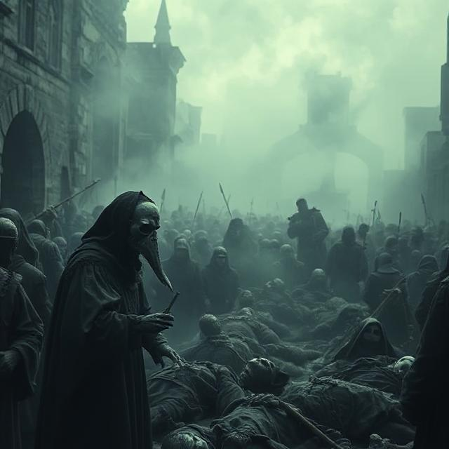
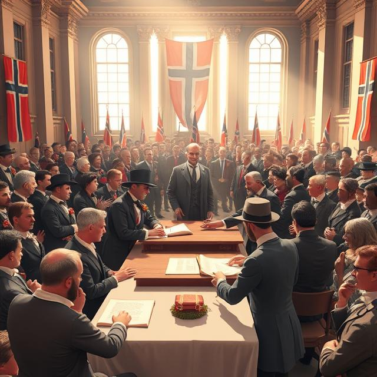

1300-1399
Svartedauden (1349)
Endringer i den politiske maktbalansen
Kristendommens etablering og kirkebygging
Handel og kulturkontakt
Begynnelsen av dansk innflytelse
1400-1499
Kalmarunionens etablering (1397)
Konsolidering av unionen
Handelsvekst i Bergen
Utvikling av norsk lov og administrasjon
Kulturell påvirkning fra Europa

1500-1599
Reformasjonen i Norge (1537)
Reduksjon av kirkens eiendommer
Etablering av et dansk styrt system
Økonomisk omstilling

Kulturell tilpasning
1600-1699
Fortsatt dansk styre
Utvikling av det norske bondesamfunnet
Handel og sjøfart
Byvekst og urbanisering
Kulturell utvikling
1700-1799
Opplysningstiden og reformer
Økt nasjonal bevissthet
Handels- og fiskerivekst
Kulturell blomstring
Politiske spenninger
1800-1899
Grunnloven på Eidsvoll (1814)
Union med Sverige (1814–1905)
Unionsoppløsningen (1905)
Språkstriden – Riksmål vs. Landsmål

Modernisering og industrialisering
1900-1999
Kvinners stemmerett (1913)
Motstand under andre verdenskrig (1940–1945)
Bygging av velferdsstaten
Modernisering av monarkiet
Økonomisk transformasjon
2000-2020
Prinsesse Mette-Marit og Kronprins Haakons bryllup (2001)

Terrorangrepet 22. juli (2011)
Koronapandemien (2020–2022)